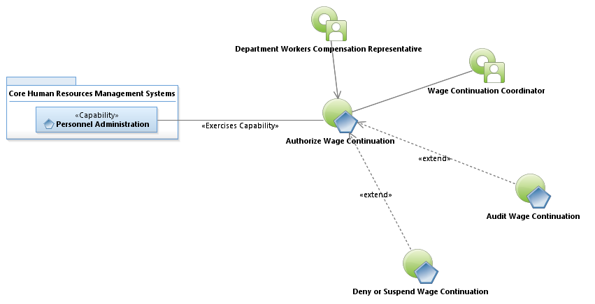
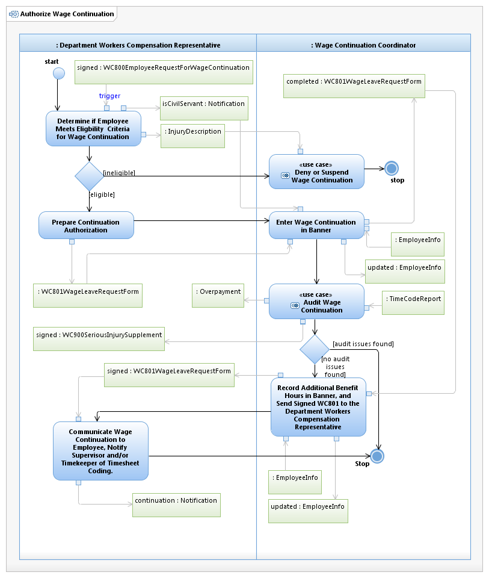

Use Case Model: Authorize Wage Continuation
Architect: Aaron Brown, IT Enterprise Architect Senior
Date Last Modified: 4/5/2013
User Review: Leslie Milvo, Cindy Steffen, Shelly Sheppard
Date: 4/5/2013
Wage continuation has been authorized for the employee and entry is made into Banner reflecting the details of the wage continuation.
Follow link to Role Definitions
Follow link to Audit Wage Continuation
Follow link to Deny or Suspend Wage Continuation

Use Case Model: Authorize Wage Continuation

Activity Model: Authorize Wage Continuation
Activity Documentation
| Activity | Documentation |
|---|---|
| Determine if Employee Meets Eligbility Criteria for Wage Continuation | For civil service, Third Party Administrator can indicate the injury is not compensable. In this case, the Employee is inelibile for "Line-of-Duty" leave |